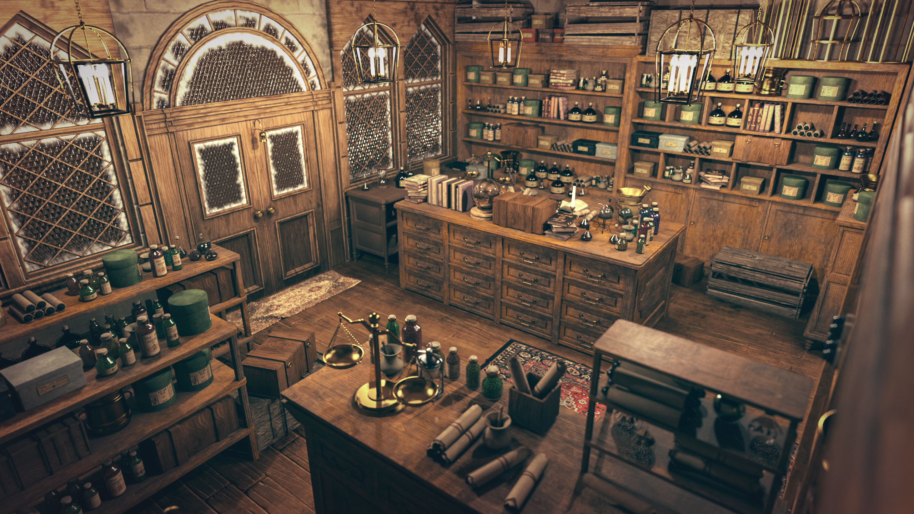

Fundada em 1867, nossa loja tem uma longa tradição em fornecer produtos de alta qualidade para bruxos e bruxas de todo o mundo. O estabelecimento iniciou suas atividades como uma pequena boticária, focada na manipulação de ingredientes herbais e elixires básicos para a comunidade local.
Hoje, Annabelle Merigold assume a liderança da loja, garantindo a qualidade de cada poção. Porque em nossa loja, a satisfação do cliente é a maior magia.
